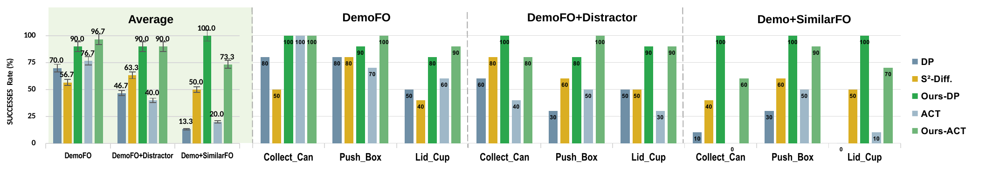
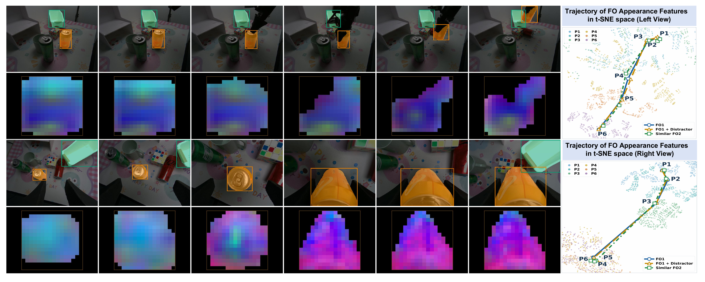

FOM-SAM3-Policy Towards Fine-Grained Object Manipulation: SAM3-Guided Visuomotor Policy with Persistent Memory Learning and Focused Visual Conditioning
Abstract

Method


Experiments
REAL-ROBOT MANIPULATION

Generalization
New-FO reuse with a frozen policy. Switching FO Memory Tokens preserves the learned Collect Can skill across new backgrounds and clutter, without policy updates.
Visual Analysis of FSAE Representations

Focused construction. Bounding boxes retain explicit target position and scale, while ROIAlign and mask filtering suppress background and non-object regions before the appearance representation is pooled.
Representation behavior. FO1 and FO1+Distractors follow closely aligned trajectories across the six viewpoints, whereas the Similar FO remains distinguishable, reflecting distractor robustness without discarding fine-grained identity.